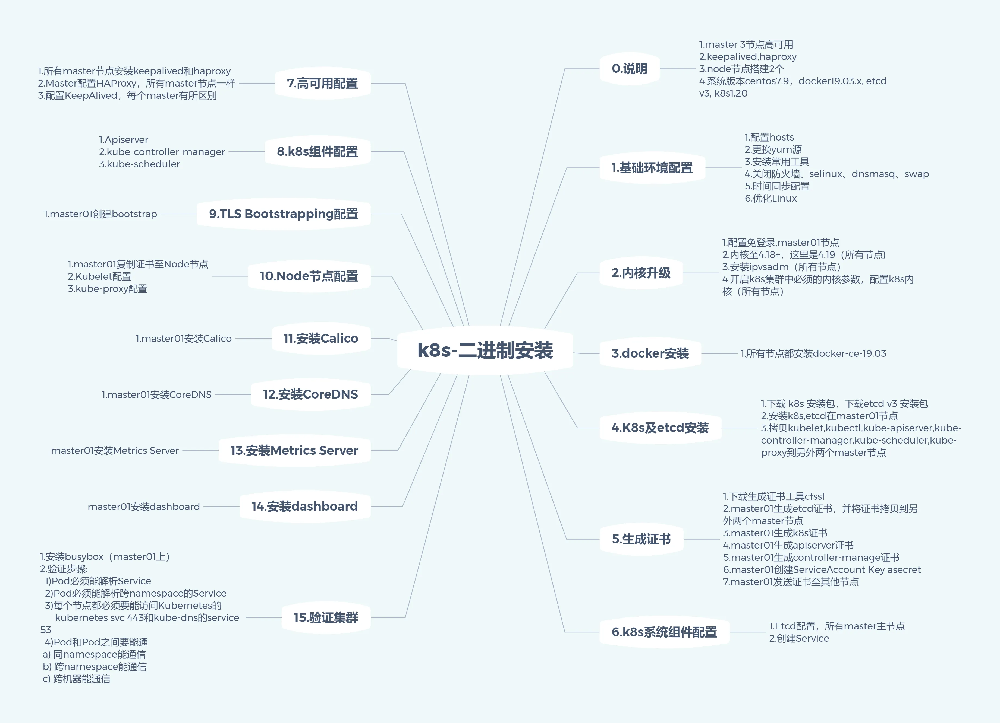
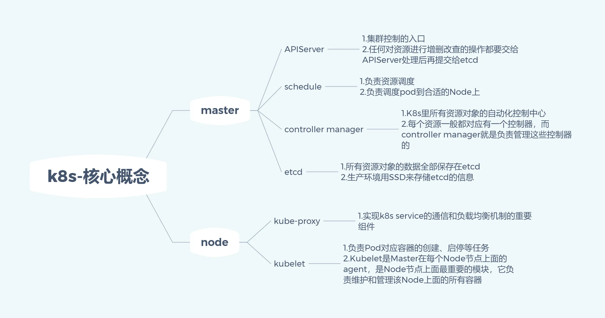
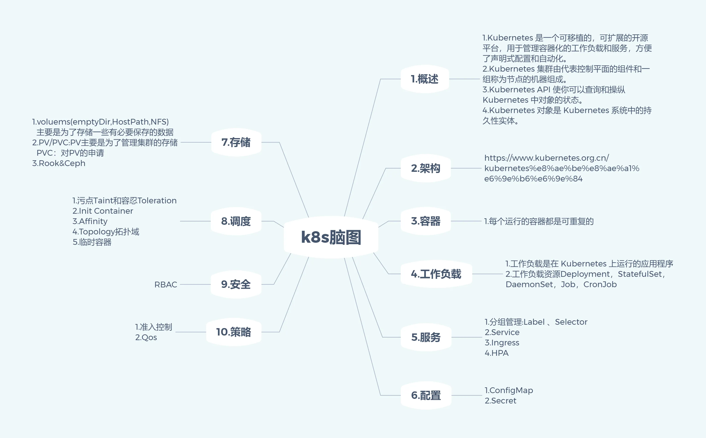

大纲-Linux: Kubernetes
- TAGS: Linux
入门
- 云原生基础：深度解析云原生
- 必备容器基础
- 云原生基石：必备容器基础
- 云原生基石：镜像制作必知必会
- 云原生基石：镜像仓库必知必会
- 云原生CRI：Containerd必知必会
- 云原生基座：K8s设计思想必知必会
- 安装 .
基础
进阶
- 数据持久化及动态存储 .
- Volumes卷
- PV&PVC持久卷
- 高级调度 .
- CronJob 计划任务
- InitContainer初始化容器
- Taint & Toleration污点和容忍入门
- Affinity 亲和性和返亲和性
- Topology 拓扑域概念
- Pod 拓扑分布约束
- 虚拟节点
- 临时容器概念和配置
- 资源合理化分配 https://kubernetes.io/docs/concepts/policy/
- K8s集群资源合理化分配：ResourceQuota
- K8s集群资源合理化分配：LimitRange
- K8s集群资源合理化分配：QoS
- 多用户和权限管理-RBAC .
高级
- 云原生存储及存储进阶
- 云存储 Ceph
- helm&operator
- 工程化管理 Helm
- K8s扩展能力 Operator
运维
- k8s容器日志收集
- K8s可观测性：基于ECK的下一代日志收集框架
- Prometheus 监控告警
- K8s可观测性：基于Prometheus的全方位监控平台
- K8s可观测性：Alertmanager异常告警通知
- 服务发布Ingress进阶
- 其他
- K8s弹性能力：基于KEDA的下一代弹性伸缩
- K8s可观测能力：基于Skywalking的全链路追踪平台
- K8s可观测能力：基于服务网格的细粒度流量管理
DevOps
- DevOps平台：基于Jenkins的持续集成持续部署
- DevOps平台：基于Tekton的云原生平台落地
- K8s企业级架构设计及落地
- K8s两地三中心架构设计及落地
- 基于ArgoCD的K8s多集群管理方案及落地
- K8s集群备份恢复
拓展
- 服务网格
- 服务网格 Istio
- 二进制集群升级
- 网络策略NetworkPolicy .
- K8s更新日志查看方法
杂项
二进制安装总结

核心概念

概念

EKS参考
从大纲整体过一遍后，可以看看eks workshop文档
- eksworkshop: github youtube
eksworkshop-old: github bilibili
基本原理到手动一步步操作
- 从最底层开始徒手搭建Kubernetes集群 github
- Kubernetes CKA, CKAD, CKS证书备考教程: bilibili killercoda